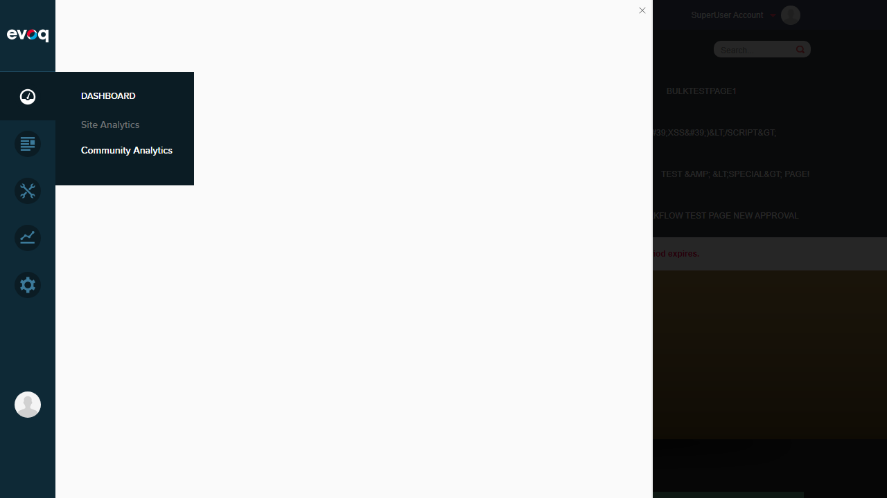

Wiki Module Analytics - Test Report
Feature Information
Extension: Evoq.PersonaBar.CommunityAnalytics (PersonaBar Module)
Feature Name: Wiki Module Analytics
Description: Analytics for wiki content including page edits, contributors, and content growth
Feature Priority: Medium
UI Location: PersonaBar > Dashboard > Community Analytics > Wiki Tab
Test Date: January 6, 2026
Tester: Automated Test (Claude)
Test Summary
| Test Scenario |
Status |
| View wiki page statistics |
FAIL |
| Track edit frequency |
FAIL |
| Monitor contributor activity |
FAIL |
| Test popular wiki pages |
FAIL |
| Verify wiki-specific metrics |
FAIL |
| Analyze content growth over time |
FAIL |
Critical Issue Found
JavaScript Error Prevents Community Analytics from Loading
The Community Analytics feature fails to load due to a JavaScript error. This blocks all Wiki Module Analytics functionality.
TypeError: utility.serializeCustomDate is not a function
at dashboardClass.init (social-dashboard-combined-instance.js:1025:39)
at Object.init (social-dashboard-combined.js:16:23)
at extension.js:104:32
at Object.execCb (require.js:1696:33)
at Module.check (require.js:878:55)
Impact: The entire Community Analytics dashboard displays a blank white panel instead of analytics data.
Root Cause: The utility.serializeCustomDate function is called but doesn't exist in the utility module.
Test Scenarios
Test 1: View Wiki Page Statistics
FAIL
What was tested: Ability to view wiki page statistics in the Community Analytics Wiki tab.
Steps taken:
- Logged in as SuperUser (host)
- Navigated to PersonaBar > Dashboard
- Hovered over Dashboard to reveal sub-menu
- Clicked on "Community Analytics"
- Observed JavaScript error and blank panel
Expected Result: Community Analytics dashboard should load with Wiki tab showing page statistics.
Actual Result: Dashboard panel shows blank white content. JavaScript error: "utility.serializeCustomDate is not a function"
Screenshot Evidence:


Test 2: Track Edit Frequency
FAIL
What was tested: Ability to track wiki page edit frequency metrics.
Steps taken:
- Attempted to access Community Analytics
- Panel failed to load due to JavaScript error
- Edit frequency metrics could not be accessed
Expected Result: Wiki analytics should display edit frequency data showing how often pages are edited.
Actual Result: Feature inaccessible - Community Analytics panel fails to render.
Test 3: Monitor Contributor Activity
FAIL
What was tested: Ability to monitor wiki contributor activity.
Steps taken:
- Attempted to access Community Analytics > Wiki
- JavaScript error prevented panel from loading
- Contributor activity metrics unavailable
Expected Result: Wiki analytics should show contributor activity including who is editing and creating content.
Actual Result: Feature inaccessible - Dashboard does not render due to utility.serializeCustomDate error.
Test 4: Popular Wiki Pages
FAIL
What was tested: Ability to view popular wiki pages analytics.
Steps taken:
- Attempted to navigate to Community Analytics
- Panel showed blank content due to JavaScript error
- Popular pages data not visible
Expected Result: Analytics should display most popular wiki pages based on views/engagement.
Actual Result: Feature inaccessible - Community Analytics module has critical JavaScript bug.
Test 5: Verify Wiki-Specific Metrics
FAIL
What was tested: Verification that wiki-specific metrics are available and accurate.
Steps taken:
- Attempted to access Community Analytics
- JavaScript error on initialization prevented dashboard load
- No metrics displayed to verify
Expected Result: Wiki-specific metrics (page views, edits, contributors, content growth) should be displayed.
Actual Result: No metrics visible - entire dashboard fails to initialize.
Test 6: Analyze Content Growth Over Time
FAIL
What was tested: Ability to analyze wiki content growth trends over time.
Steps taken:
- Clicked Dashboard > Community Analytics
- Observed JavaScript error in console
- Panel displayed blank - no analytics or charts rendered
Expected Result: Time-series data showing wiki content growth should be displayed with charts/graphs.
Actual Result: Feature completely non-functional due to JavaScript initialization error.

Observations
Code Analysis
Review of the source code revealed:
- Services/CommunityAnalyticsController.cs - API endpoints exist for:
- GetModuleDashboardInfo (moduleName="Wiki")
- GetModulePopularContent (moduleName="Wiki")
- GetModuleTagStats (moduleName="Wiki")
- GetModuleContextData (moduleName="Wiki")
- Evoq.PersonaBar.CommunityAnalytics.dnn - Wiki extension is registered with identifier "Evoq.CommunityAnalytics_Wiki" and path "social-dashboard?Wiki"
- The backend code appears complete, but the frontend JavaScript has a missing function dependency.
Root Cause
The JavaScript file social-dashboard-combined-instance.js at line 1025 calls utility.serializeCustomDate() which does not exist in the utility module. This is likely due to:
- Missing utility function definition
- Incorrect module loading order
- Version mismatch between PersonaBar core and Community Analytics module
Recommendation
The utility.serializeCustomDate function needs to be either:
- Added to the utility module if missing
- Or the code referencing it needs to be updated to use an existing function
Environment Details
- Website URL: http://localhost:8081
- User: host (SuperUser)
- Browser: Chromium (Playwright)
- Viewport: 1280x720
- Evoq Version: Trial (20 days remaining)
Screenshots Reference
All screenshots captured during testing:
- Wiki_Module_Analytics_step00_login_confirmed.png - Login verification
- Wiki_Module_Analytics_step01_dashboard_panel.png - Site Analytics panel
- Wiki_Module_Analytics_step02_community_analytics_error.png - Error state
- Wiki_Module_Analytics_step03_dashboard_submenu.png - Dashboard submenu
- Wiki_Module_Analytics_step04_community_analytics_blank.png - Blank panel state